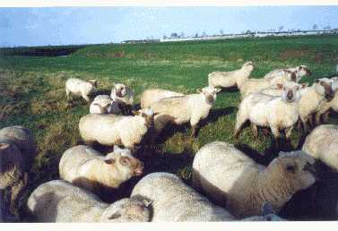

MOUTON VENDEEN

Les agneaux naissaient l'hiver dans une bergerie ouverte au soleil, trés bien aérée; et têtaient, en toute liberté, le lait de leur mère.
Mon troupeau, repris sur place en 2000 par Alain POYAU, est selectionné en race pure depuis 1966.
300 brebis, sur les 400, étaient filles de béliers élites ou améliorateurs boucherie -AMBO-, testés à la Station de Berry-Test , prés de Bourges, dont je fus président de 1989 à 1996.
L'insémination artificielle était pratiquée régulièrement sur une partie des brebis avec la semence des meilleurs béliers testés favorablement.
La contractualisation est recommandée pour procréer des béliers, à la demande spécifique d'éleveurs-utilisateurs, pour améliorer les qualités bouchères des agneaux, mais aussi la prolificité et la valeur laitière des futures brebis.
Les agneaux de boucherie partaient dans le cadre du label "Agnocéan".
|  | Troupeau au paturage dans les prairies naturelles. En arrière plan, les remparts de la citadelle de BROUAGE en 1999. |
Le schéma de sélection:
Nos meilleurs agneaux mâles partaient à 2-3 mois à la station de contrôle individuel du Mouton-Vendéen et étaient comparés pendant 100 jours aux meilleurs agneaux des autres élevages vendéens.
Les dix meilleurs étaient destinés au testage à Berry-Test, pour juger les qualités bouchères de leurs descendants, selon un protocole de l'INRA sur vingt mesures : l'épaisseur de la musculature, des os, du gras etc...
Sur ces dix béliers, quatre étaient classés AMBO - améliorateurs boucherie- et repartaient en centre d'insémination pour procréer la génération suivante.
La prolificité et la valeur laitière étaient testées en ferme sur les brebis. Les béliers d'insémination artificielle, dont les filles étaient supérieures à la moyenne, étaient classés "Améliorateurs" prolificité ou valeur laitière. S'ils cumulaient la qualification "AMBO" avec "Améliorateurs", ils étaient promus "Elites", qualification suprême.
e-mail: andremenet@aol.com
site: menet-soubise.fr